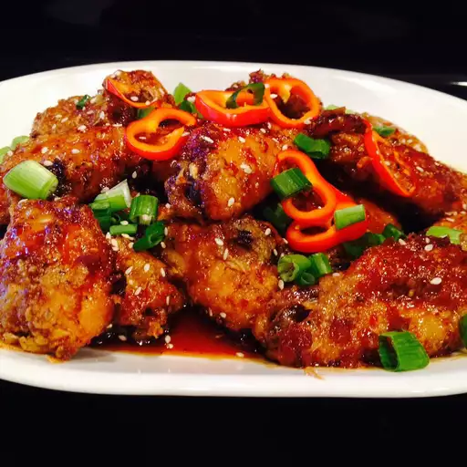

Garlic-Ginger Chicken Wings

Discription:
Chicken wings are a popular dish in Japanese cuisine and can easily be made in the oven or over an open-flame grill.This recipe for ginger and garlic chicken wings are marinated in a very simple sauce of soy sauce, mirin, ginger, and garlic. The wings are baked and then garnished with roasted white sesame seeds for a great appetizer or meal. This dish is also perfect for parties, potlucks, or save a few leftover wings to add to your bento lunch the next day!
Chicken wings in Japanese cuisine are commonly cooked as one whole wing, such as tebasaki yakitori, which is a grilled dish of skewered chicken wings. On the menus of izakaya, or tapas, style bars, and restaurants, you might find small dishes with the wings broken down into smaller pieces such as drumettes and wingettes.
Ingredients:
- cooking spray
- 5 pounds chicken wings, separated at joints, tips discarded
- 3 tablespoons hot sauce (such as Frank's Red Hot)
- salt and ground black pepper to taste
- 2 tablespoons vegetable oil
- 1 cup all-purpose flour
- ½ cup rice wine vinegar
- ½ cup packed brown sugar
- 3 crushed garlic cloves
tablespoons minced fresh ginger
- 1 tablespoon Asian chili paste
- 1 tablespoon soy sauce
Steps:
- Preheat the oven to 400 degrees F (200 degrees C). Line 2 baking sheets with aluminum foil; coat with cooking spray.
- Season chicken wings with hot sauce, salt, and pepper in a large bowl. Add vegetable oil; toss to coat.
- Place wings and flour in a large, food-safe plastic bag; hold closed tightly and shake until wings entirely coated, no wet spots should remain. Transfer wings to the prepared baking sheets, making sure no wings touch one another. Coat wings with cooking spray.
- Bake in the preheated oven for 30 minutes; flip wings. Continue baking until wings crispy and no longer pink in the center, about 30 minutes more.
- together in a saucepan; bring to a boil, then immediately remove from heat.
- Toss 1/2 wings and 1/2 glaze together in a large bowl using tongs until evenly coated; transfer to a serving platter. Let sit about 5 minutes to allow glaze to soak into wings before serving. Repeat with remaining wings and glaze.